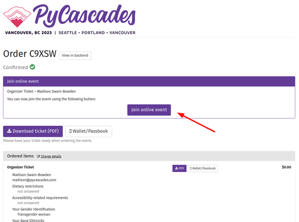
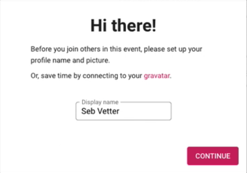
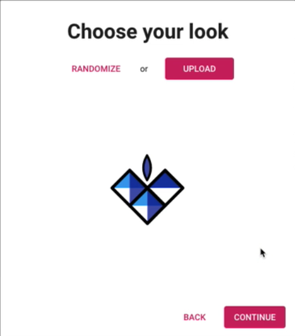
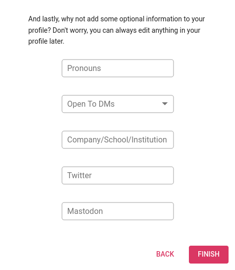
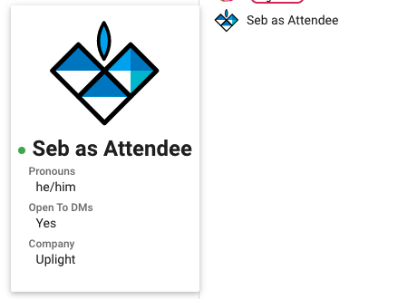
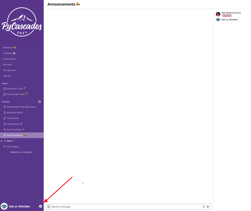
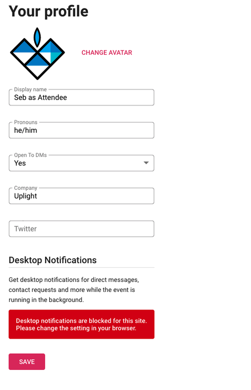
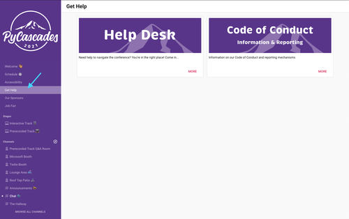
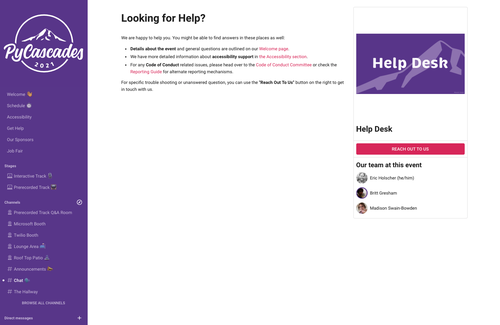
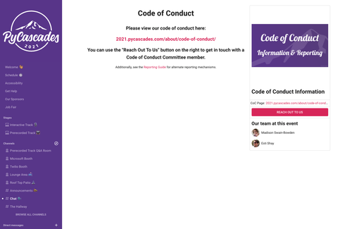

Venueless
For our online attendees, we are holding the conference programs in Venueless. You'll enter Venueless via your Pretix confirmation email. Madison has helpfully created this instructional video to help you get into the platform:
NOTE: Venueless will open at 12PM PST on Friday, February 7th (contrary to what is said in the video)
Accessing the Platform
You'll have received an order confirmation email after purchasing your ticket. This contains a link to ticket page that will look similar to this:

This button won't be available until Friday, February 7th 2025, when we'll turn on access to our event platform. After that you'll see the "Join online event" button at the top of your order. Click on the link to log into the platform and setup your account.
Setup Your Profile
First Login
When you login for the first time, you'll be prompted to complete your user profile. It'll first ask you to fill in your display name and a profile photo (or use Gravatar/LinkedIn to connect your information). Adding a photo or avatar will make it easier for people to recognize you throughout the event.
These are the first screens you'll encounter when logging in. You can change all of these later on your profile page.


Additional Profile Questions
We have added a few optional profile questions. They'll help you to share some more details about you with the rest of the attendees:
- Pronouns: we ask that you add your pronouns to make sure everyone feels welcome and comfortable sharing theirs as well. This'll make it easier to interact with people in a respectful way and allows others to address you the way you prefer to be addressed.
- Open To DMs: you can indicate that you are open to other attendees DM'ing you. Alternatively, you can let others know you'd prefer not to be contacted. This is a guide for others and not enforced through the platform.
- Company/School/Institution: Feel free to share who you work for or are affiliated with.
- Social Media: Share you twitter/Bluesky/LinkedIn URL.
- Mastodon: Alternatively or in addition, share your Mastodon user URL.

This is how others will see your profile information when clicking on your username in the chat.

Changing Your Profile
You can change your profile at any time by clicking on the Gear icon next to you name a the bottom. Or you can access it by going to https://pycascades.venueless.events/preferences.


Getting Help During the Event
We have multiple options for you to find your way around the platform during the event and get help if you need it.
Welcome Page
You'll find some general documentation on our Welcome Page which will also direct you to the different rooms and channels.
Help Desk & Code of Conduct
You might not find your answer in our documentation or have a specific issue that you need our help with. Head over to the Get Help > Help Desk section in Venueless.
☎️ You can contact a staff member through the "Reach Out to Us" button.


For any Code of Conduct issues, please reach out to the Code of Conduct committee at Get Help > Code of Conduct.

Our Sponsors
We wouldn't be able to do any of this without the generosity and support of our sponsors. You can see who supported us this year by visiting the sponsor page of our website.
Reach Out To Sponsors
You can reach out to attendees representing the sponsor through the sponsor's page in Venueless. Go to the sponsor's page following the link above and click on the Reach Out To Us button.
Sponsor Booth
Some of our sponsors may have a virtual booth setup in Venueless during the event. You'll have an opportunity to learn more about the companies and talk to the amazing folks who work there.
Make sure to stop by the booths during the day to learn more about what each of our sponsors does. Don't forget to thank them for their support!
Open Spaces / Topic Rooms
Do you have a topic that you'd like to talk about with a smaller group of people? You've met a few people and would like a place for a conversation with these folks?
Reach out to our volunteers either in the chat or through the Get Help > Help Desk and we can help you find an appropriate for you to chat.